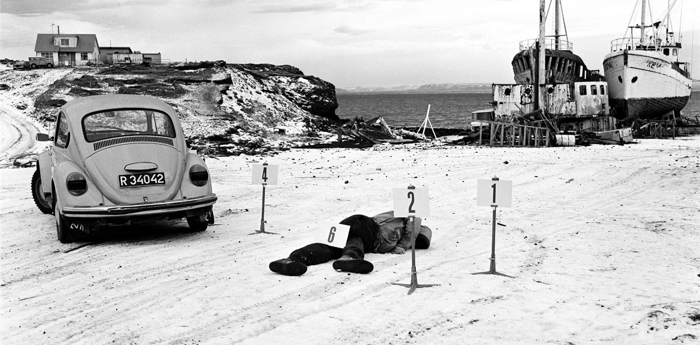
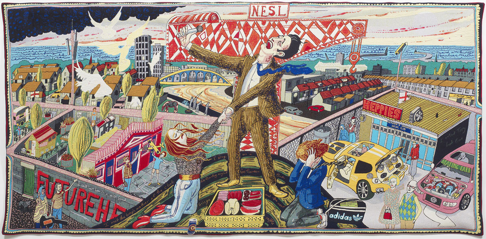
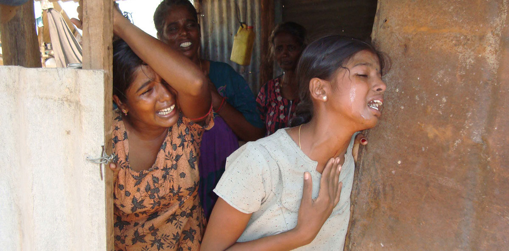
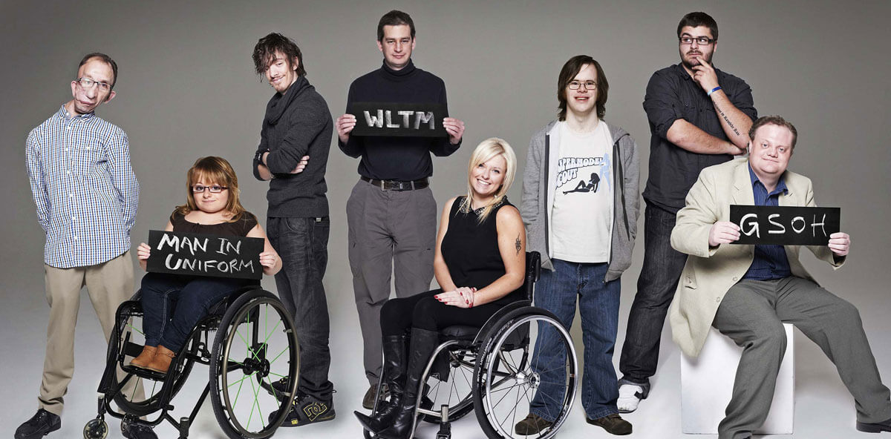
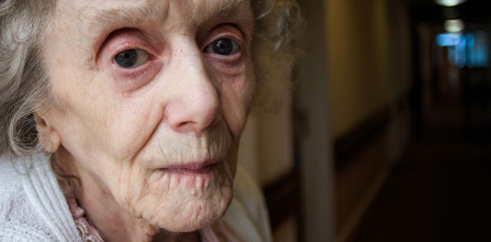
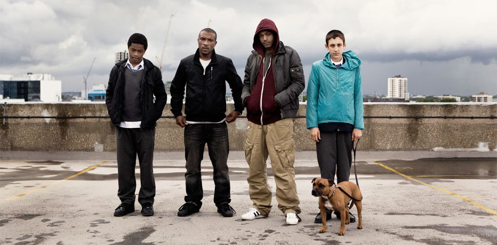

About
Projects
Clients
Approach
News
Contact
Artem

Out of thin air
Andre Simon Awards

All In The Best Possible Taste with Grayson Perry
Inside Dior
My Brother the Terrorist

No Fire Zone: The Killing Fields of Sri Lanka
Tales of the Grim Sleeper

The Undateables

The Year the Town Hall Shrank

Top Boy
Previous
Next
Intelligent communications
campaigns for the creative industries and projects with a social impact